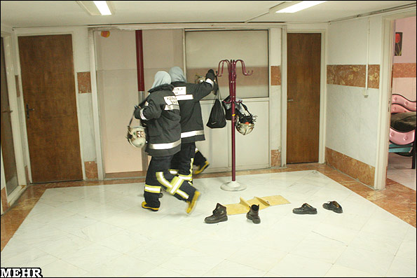

پذيرش > سایت نوشته ها > یک روز با پنج آتش نشان زن/ از آژِیر تا اعزام؛ فقط 20 ثانیه!


 یک روز با پنج آتش نشان زن/ از آژِیر تا اعزام؛ فقط 20 ثانیه! یک روز با پنج آتش نشان زن/ از آژِیر تا اعزام؛ فقط 20 ثانیه!
9 مهر 1390 - - نسخه قابل چاپ
برای اولین بار برای امدادرسانی به محل عملیات اعزام شدم، با خودم عهد کردم که دیگر دور آتش نشانی را خط بکشم. جسد بی جان کودکی پنج ساله ای که دیگر کاری نمی شد برایش انجام دهم ، اما حالا .... .
به گزارش خبرنگار مهر، ساعت 4 بعدازظهر است و در جمع صمیمی تنها آتش نشانان زن کشور در کرج هستم. چهره ها و خوش برخوردی آنها آرامش خاصی به آدم می دهد، الحق که فرشته های نجات هستند و رسالتشان نیز امدادرسانی و کمک. در ابتدای ورود با استقبال گرم و صمیمی پنج بانوی آتش نشان ایران مواجه می شوم. پس از احوال پرسی می رسیم به موضوع اصلی. از دغدغه هایشان می گویند. از گفته هایشان معلوم بود که علاقه و عشق خاصی به شغلشان دارند، گویی جزئی از وجودشان شده است.
حدود 9 سال است که اولین ایستگاه بانوان آتش نشان کشور در کرج راه اندازی شده است و طی این سالها، عملیات و حوادث مختلفی از جمله زلزله بم، تصادف اتوبوس اقوام کرد در اتوبان کرج – قزوین، سقوط اتوبوس در رودخانه کرج و ... را پوشش دادند و به امدادرسانی به حادثه دیدگاه پرداختند.
در ابتدا سارا شعبان دوست مسئول ایستگاه آتش نشانی بانوان گفت: در این ایستگاه در مجموع آتش نشانان در دو شیفت کاری مشغول به فعالیت هستند، در هر شیفت سه یا چهار آتش نشان حضور دارند که از این تعداد یک نفر در مواقع بحران و حوادث مسئولیت هدایت خودرو را بر عهده دارد. در هر مأموریت و عملیات، در مجموع دو آتش نشان زن و یک راننده و هدایت گر خودرو به محل حادثه اعزام می شوند.
در مجموع در این ایستگاه 11 بانوی آتش نشان در بخش های مختلف اعم از هدایت گر خودرو، اپراتور، آتش نشان و ... حضور دارند. پوشش بانوان آتش نشان هیچ فرقی با آقایان نمی کند و تنها زنان مقنعه به سر دارند که در پوشش کلاه گاهی حادثه دیدگان فکر می کنند که آقا هستند.
در ابتدا زمانی که آزمون کشوری برای جذب بانوان آتش نشان برگزار شد، 72 نفر متقاضی حضور در آزمون بودند که پس از برگزاری آزمون تنها 32 نفر برای تست ورزش آمدند و از این تعداد در مجموع 11 نفر موفق به قبولی شدند که هم اکنون در این ایستگاه مشغول به فعالیت هستند.
به گفته شعبان دوست، طی سالهای گذشته استانهای مختلفی مانند همدان، شیراز و کرمان ایستگاه آتش نشانی بانوان را راه اندازی کرده اند اما به دلیل مشکلات مختلف این ایستگاهها تعطیل شد.
در ادامه قرعه به نام بانوی آتش نشانی که کنار من نشسته، می افتد. محبوبه ابراهیمی به 9 سال گذشته بر می گردد. شیطنت عامل اصلی آتش نشان شدنم بود!« در آن زمان 21 ساله بودم و خیلی شیطون، وقتی فهمیدم که سازمان آتش نشانی نیرو جذب می کنه، با پیگیری های فراوان، بالاخره موفق به حضور در دوره های آموزشی شدم. پس از اتمام دوره ها، به صورت شیفت در ایستگاه حضور یافتم.»
او از اولین باری که در عملیات حضور یافت گفت، از زمانی که برای اولین بار شیلنگ خودروی حامل آب را در دستانش فشرد و شک به دلش افتاد که نمی تواند شعله های آتش را خاموش کند.
دست و پایش می لرزید، اعتماد به نفس خود را از دست داده بود، از طرفی عکس العمل مردم برایش غم انگیز بود، این باور در مردم وجود داشت که زنان نمی توانند به امدادرسانی بپردازند و نگران این بودند که هر لحظه عزیزانشان از دست بروند. به گفته ابراهیمی، هم اکنون شهروندان بسیار ساده و راحت با این موضوع کنار آمده اند و در برخی موارد به کمک آتش نشانان می آیند. در واقع برایشان حضور بانوان آتش نشان در حوادث عادی شده است.
تک دختر خانواده حاج ایل؛ آتش نشان پرتکاپوی ایران
نوبت به «زهرا حاج ایل» رسید، از برق نگاهش مشخص بود که فوق العاده پرتکاپو است و عاشق شغلش. « من تک دختر و در کنار سه برادرم بزرگ شدم، از کودکی همبازی برادرانم بودم و از همان موقع علاقه زیادی به کارهای مردونه داشتم. فکر می کردم اگر تنها پرستار شوم می تونم به مردم خدمت کنم. در ذهنم هم نمی گنجید که روزی آتش نشان شوم و بتونم سر عملیات بروم و به مردم امدادرسانی کنم.» اولین حضورش در عملیات را هنوز به یاد دارد، در آن زمان 18 سال بیشتر نداشت.
هنوز چهره معصوم محمد دانیال بعد از 9 سال در ذهنش باقیمانده. در اولین عملیات تمام دغدغه اش تنها نجات دانیال از استخر بود که پس از بیرون کشیدن کودک، متوجه شد که نیم ساعت است که دیگر در این دنیا نیست...»
تنها 20 ثانیه برای خروج بانوان از ایستگاه آتش نشانی کافی است
در ادامه شعبان دوست به سرعت عمل بانوان آتش نشان اشاره کرد و گفت: به محض شنیده شدن صدای آژیر خطر در ایستگاه، بانوان آتش نشان زیر 20 ثانیه آماده می شوند و در ماشین ها حاضر می شوند.
وی ادامه داد: این در حالیست که در جهان حدود سه دقیقه و در ایران حدود پنج دقیقه آتش نشانان مدت زمان لازم است تا آتش نشانان به محض شنیدن صدای آژیر خطر به بیرون ایستگاه بروند. نکته قابل توجه در ایستگاه آتش نشانی بانوان این است که سه نفر از بانوان آتش نشان همسر هم شغل خود دارند و پیش آمده که بعضا در برخی از عملیات ها به همراه همسر خود حضور یابند. وقتی نوبت به «سارا مهدوی» می رسد، کوتاه از زندگی متأهلیش می گوید و تنها فرزندش.
رویت مار در آموزشگاه خواهر شوهر!
«منصوره جوانمرد» آخرین بانوی آتش نشانی است که سفره دلش را برای ما باز می کند و از زندگی مشترک با شغل آتش نشانی می گوید: وقتی برای اولین بار خواستم که در عملیات حضور یابم، متوجه شدم که در یک آموزشگاه علمی یک مار است که با آتش نشانی تماس گرفته اند، با حضور در آموزشگاه و رویت ما و انجام اقدامات لازم، از میان جمعیت با خواهرشوهرم مواجه شدم.هم برای او جالب بود و هم برای من!
حضور بانوان آتش نشان در مأموریتهای خاص
زهرا شعبان دوست می گوید: در عملیات های خاص مانند زلزله بم آتش نشان خانم از ایستگاه حضور داشتند و به امدادرسانی پرداختند.
جان پیرزنی که سه روز زیر آوار زلزله بم بود نجات دادم
با اتفاق زلزله بم، من و خانم جوانمردی به استان کرمان اعزام شدیم، از هواپیما که پیاده شدیم، حس غریبی پیدا کردم، غم عمیقی وجودمو گرفت، حدود 10 روز در بم بودیم، هر روز به دنبال یافتن جنازه بودیم، در آن زمان پیرزنی که سه روز زیر آوار مانده بود، را نجات دادیم.
در جریان زلزله بم، کارشناسانی از کشورهای ترکیه، آمریکا و انگلیس در کرمان حضور داشتند و از فعالیت آتش نشانان خانم در ایران تعجب کردند. بانوان آتش نشان ایران تا کنون موفق به دریافت تندیس شجاعت از مالی شدند. همچنین کارشناسانی از کشورهای روسیه، انگلیس، آلمان، آمریکا، ژاپن، کره جنوبی و عربستان نیز در محل این ایستگاه حضور یافتند.
گپ و گفت ما با به صدا در آمدن صدای آژیر خطر به پایان رسید و از بانوان آتش نشان هرکدام به سمت لباس های مخصوص خود رفتند. برایم جالب بود که یک خانم هدایت گر خودروی آتش نشانی باشد. حالا تنها در ایستگاه دو آتش نشان خانم حضور دارند، همه جا ساکت است، بقیه آتش نشانان خانم به محل حادثه رفته اند.این است رسم همدلی و نوع دوستی، چه صادقانه و بی ریا جان خود را بر طبق اخلاص گذاشته اند...
خبرگزاری مهر
ارسال به
بالاترین
،
توییتر
،
فریندفید
،
فیسبوک
در همين بخش :
 یک خبر تلخ؟ یک قانونشکنی؟ یک تصمیم بخشنامهای جدید؟ یک خبر تلخ؟ یک قانونشکنی؟ یک تصمیم بخشنامهای جدید؟
چرا بایست به سکسوالیته پرداخت؟ / نفیسه آزاد
آزارجنسی خانگی؛ «قربانی» نه، «نجات یافته»
زنان، بزرگترین بازندگان بهار عرب
سانسور از دیدگاه جنسیتی/الهه امانی
ديگر بخش ها :
طرح یک میلیون امضا
|
مقالات
|
سایت نوشته ها
|
اخبار
|
گزارش كمپين
|
گفت و گو
|
علیه سکوت
|
كوچه به كوچه
|
نامه های شما
|
گزارش ویژه
|
گفتگو با اعضا
|
ویژه سالگرد کمپین
|
تصویر برابری
|
دل آرام علی
|
تریبون
|
مقالات
|
تاریخ شفاهی
|
خارج از چارچوب
|
کتابخانه
|
درباره کمپین
|
کمپین در شهرها
|
کمپین در بند
|
صدای تغییر
|
ویژه 22 خرداد
|
لایحه حمایت از خانواده
|
گالری
|
عشا مومنی
|
امیر یعقوبعلی
|
خدیجه مقدم
|
راحله عسگری زاده و نسیم خسروی
|
پروین اردلان،جلوه جواهری، مریم حسین خواه، ناهید کشاورز
|
زینب پیغمبرزاده
|
سعیده امین، سارا ایمانیان، محبوبه حسین زاده، ناهید کشاورز و همایون نامی
|
احترام شادفر
|
نسیم سرابندی زاده،فاطمه دهدشتی
|
وبلاگ مهمان
|
پرونده خرم آباد
|
دستگیری ها
|
مریم مالک
|
پرستو اللهیاری
|
مهرنوش اعتمادی
|
سمیه رشیدی
|
Other Languages
|
همراهان
|
«فراخوان کمپین ده روز با بهاره هدایت»
| English
|